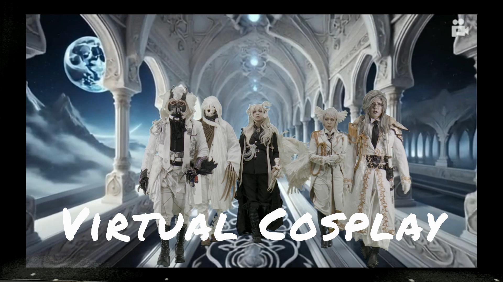
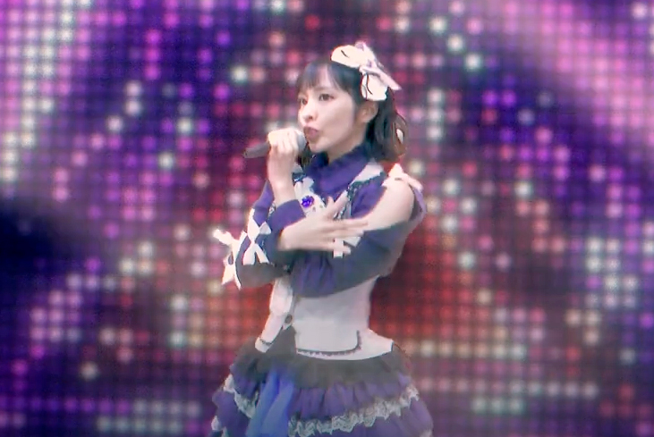
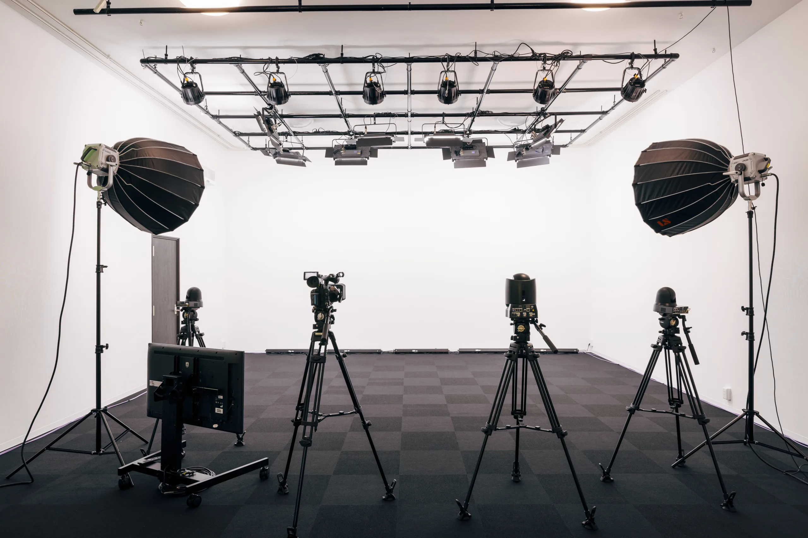
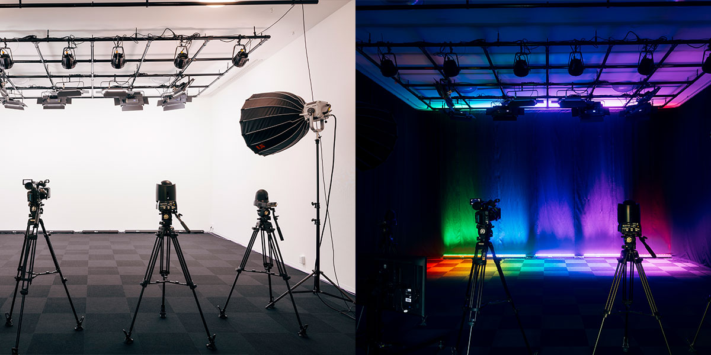
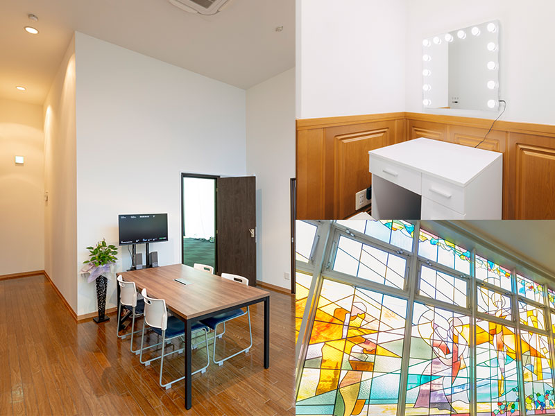

完全防音を完備し、同録が可能な最新設備を備えたバーチャルスタジオ
撮影用途に合わせて背景を変更できます



詳細はこちら
詳細はこちら
詳細はこちら
詳細はこちら

撮影と同時に高品位な音を収める"同録（同時録画収音）"に対応。スタジオQは完全防音の収録空間を基準に、外部ノイズや空調音を遮断し、声の通りと明瞭さを確保します。
対談・企業メッセージ・セミナー配信・演奏収録までワンテイクで完結。これにより収録時間が短縮され、コスト削減を図ることができます。

大阪市内ではあまり見当たらない約5mの高い天井と22坪の広い空間を活かした照明設備の充実により、グリーンバックの撮影もより鮮やかで美しい映像撮影がおこなえます。
防音設備も完備しており、反響音が少なく、音が漏れにくい構造となっております。これにより音楽LIVEの収録・配信も可能となりました。

撮影用途に応じて、白ホリ風、黒幕、グリーンバックなど多彩な背景をご用意しています。各背景に最適化した照明設備も完備。被写体の質感や雰囲気を丁寧に演出し、ワンカットから本格的な収録まで柔軟に対応します。背景の切替は短時間で可能で、様々な用途に対応いたします。

4台のカメラをリモート操作できるほか、クロマキーヤー4台を各カメラに搭載し、それぞれのカメラでリアルタイム合成が可能です。
また、カメラ8台まで接続可能なスイッチャー、収録機、WEB配信設備もそれぞれ各2台常設し、冗長性も兼ね備えております。
他、音楽LIVE用の24チャンネル・ミキサー、照明設備のコントロールもオペレーションルームから操作でき、これら全てをご利用頂けます。

ステンドグラスからやわらかな光が差し込むラウンジは、打合せや台本確認、クライアント様の待機場として心地よく過ごせる開放的な制作現場にはうれしい付帯スペースです。
また専用のメイク室はハリウッドミラーと照明を備え、ヘアメイクや衣装チェックを落ち着いて行えます。
Studio Q
〒556-0003
大阪府大阪市浪速区恵美須西３−２−４ ２F
最寄り駅
大阪メトロ（地下鉄）御堂筋・堺筋線 動物園前駅
6番出口（徒歩4分）
JR環状線新今宮駅 通天閣口（徒歩4分）
TEL 06-6978-8122
FAX 06-6978-8123